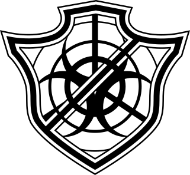
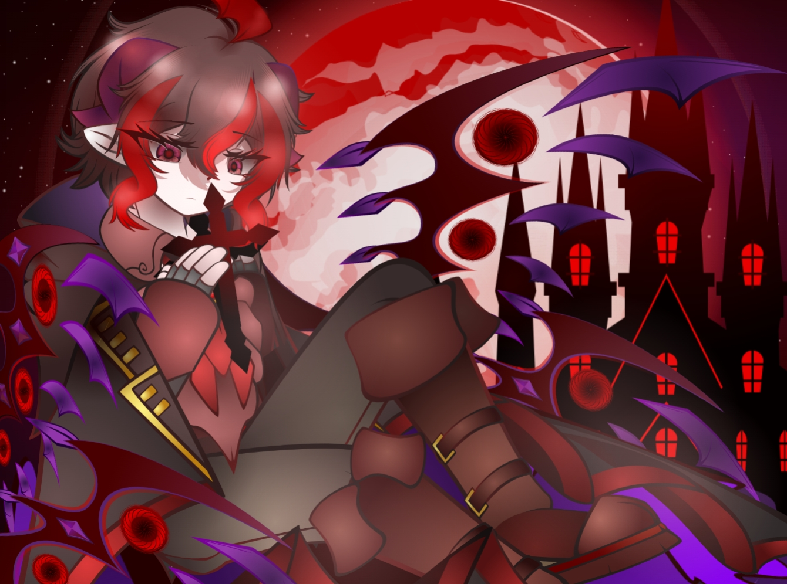
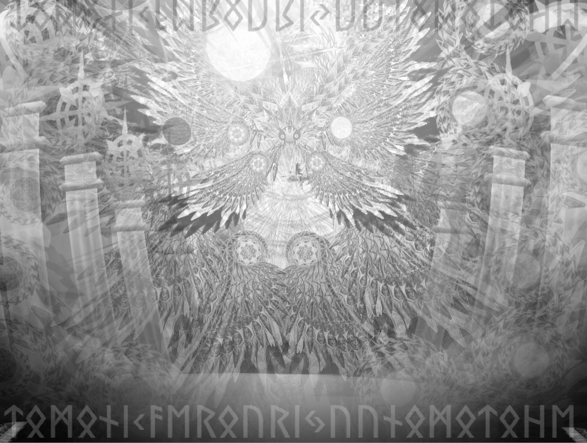
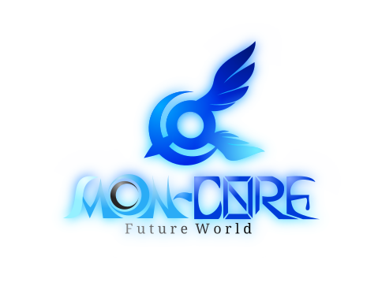

Illustration
イラスト
私が制作した作品集を掲載しています。作品は随時追加・更新予定です。
アイコンデザイン
作品タイトル
作品説明
ロゴデザイン
エクリプスラボ ロゴ

架空の研究機関「エクリプスラボ」のために制作したロゴデザインです。
鋭い直線と幾何学的な形状を組み合わせることで、
研究機関らしい機械的で無機質な印象を表現しました。
また、中央にはバイオハザードマークを配置し、それを複数のラインで囲むことで、
「危険な存在を監視・管理する」という組織の役割を表現しています。
シャープで直線的な形状を用いることで、冷静さや秩序を感じさせる一方、
シンボル全体には「異常を封じ込め、管理する」という組織の役割を象徴するデザインを取り入れています。
シンプルな構成ながらも、研究施設らしい信頼感と不穏な雰囲気が共存するロゴを目指して制作しました。
また、制作に至っては、シンボルのバランスや線の太さを調整し、研究機関らしい無機質さと危険性が両立する形を目指して何度も修正しました。
使用ツール
Scratch内蔵ベクターエディター
オリジナルキャラクター
カネル・ヴァンパイア

Scratchのベクターエディターのみを使用し、どこまで滑らかな陰影や立体感を表現できるかに挑戦した作品です。
黒・赤・紫を基調とした配色で、ヴァンパイアらしい妖しさや危険な雰囲気を表現しました。
一方で、キャラクターの表情や柔らかな陰影によって、冷たさだけではない繊細な印象も持たせています。
ベクターイラストの特性を活かし、滑らかな曲線や細かなグラデーションを重ねることで、立体感や質感を表現しました。
また、背景の月や城、翼のような装飾も世界観の一部として設計し、一枚のイラスト全体で物語が伝わる構成を意識しています。
髪や服のグラデーション、背景との色のバランスなどを何度も調整し、キャラクターが最も引き立つ配色になるまで改善を繰り返しました。
※画像の表示形式の都合上、ポートフォリオではJPEG形式で掲載しています。
使用ツール
Scratch内蔵ベクターエディター
視聴方法
TurboWarpを使用してWeb上で視聴できます。
BGM：夢想世界
龍

自分の思う神をテーマに制作したオリジナル作品です。
全体をモノクロで統一することで神聖さや静寂を表現し、
細かな装飾や模様を何層にも重ねることで、規則性のある装飾と複雑な模様を重ねることで、人知を超えた存在を表現しました。
また、構図には左右対称を基調としながら、一部にあえて非対称の要素を取り入れることで、
秩序と不完全さが共存する印象を与えています。
背景の柱や文字、装飾にも意味を持たせ、一枚の作品全体から宗教画のような神秘性が伝わることを目指しました。
使用ツール
Scratch内蔵ベクターエディター
視聴方法
TurboWarpを使用してWeb上で視聴できます。
BGM：歓喜の歌
⚠ この作品は高品質なベクター素材を多数使用しているため、 読み込みに時間がかかる場合があります。
▶ 作品を再生世界観・コンセプトアート
MOONCORE
MOONCOREの世界観を象徴するロゴデザインです。
左右に広がる羽根は未来への発展や可能性を表現し、
青を基調とすることで科学技術やAIが発展した世界をイメージしています。
中央には円形のモチーフを配置し、
「MOON」の由来である月を表現するとともに、
中央を大きく空けることで作品名にも含まれる「CORE」が視線の中心となるよう設計しました。
シンプルな形状の中にも世界観を象徴する要素を盛り込み、
作品全体のシンボルとなることを目指して制作しました。
アイコンやWebサイトなど様々な場面で使用できるよう、シンプルな構成を意識しました。

.svg)
.svg)
.svg)
MOON COREは、科学技術やAI、生体工学が極限まで発展した未来を舞台とするオリジナルSF世界観作品です。
コンセプト
MOONCOREは、科学技術やAI、生体工学が極限まで発展した未来を舞台としたSF世界です。
未来技術そのものを描くことが目的ではありません。
進化病や変異体、アンドロイド、国家ごとの思想などを通して、
「人間とは何か」「意味とは何か」といった答えのない問いを描くことをテーマとしています。
主なテーマ
- 意味とは何か
- 人間らしさとは何か
- 自由と管理
- 罪と償い
- 不完全であることの価値
イラスト
MOONCOREの世界観を表現するために制作した作品です。今後も作品を追加・更新していく予定です。
→ MOON CORE 資料集webサイトを見る